Provisioning
Il provisioning è una delle funzionalità più importanti di SCMP. Attraverso questi moduli è possibile allocare risorse runtime all’interno dei provider gestiti da SCMP.
Per utilizzare questa funzionalità, è necessario che siano definite delle relazioni all’interno di SCMP.
Questo vincolo è stato introdotto per legare alcune caratteristiche al provisioning; ad esempio, la dimensione della VM non è selezionabile durante il provisioning ma è tra le caratteristiche predefinite dagli amministratori nel catalogo.
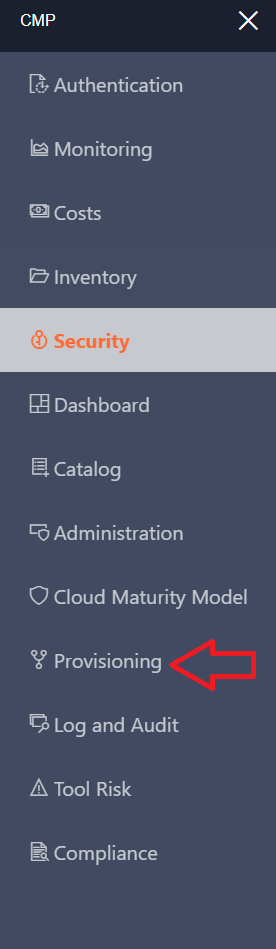
Dashboard
Accedendo alla funzionalità, la prima pagina disponibile è la Dashboard dei provisioning effettuati nel sistema.
La pagina presenta una serie di grafici, filtri e la lista dei provisioning eseguiti.
I grafici permettono di visualizzare le informazioni presenti nella tabella, raggruppate per:
- Il totale di tutti i provisioning effettuati, suddivisi per tipologia.
- Lo stato dei provisioning effettuati, suddivisi per esito e categoria della risorsa provisionata.

In fondo alla pagina, possiamo utilizzare la sezione filtri per modificare i risultati presenti in tabella. Il filtro principale è “Tipologia Provisioning” che consente di selezionare la tipologia di asset da visualizzare, nello specifico:
- Selezionando “Risorse” viene aggiunto un filtro che consente di selezionare la tipologia di risorsa per cui si vuole visualizzare lo stato del provisioning. Di default il sistema mostra la lista delle VM provisionate.
- Selezionando “Servizi” e “Servizi custom” non sono presenti filtri aggiuntivi e la lista viene aggiornata solo con i provisioning relativi ai Servizi.
- Selezionando “Blueprint” viene aggiunto un filtro che consente di cambiare il flusso (cioè la tipologia di blueprint da visualizzare) e la tabella viene modificata per mostrare solo i flussi non ancora completati. Sopra la tabella è presente un controllo che consente di cambiare tab, per passare dai flussi “in corso” a quelli “Completati”.

Specifiche della tabella Provisioning
“Risorse”, “Servizi”, “Servizi Custom”
La lista presenta i seguenti attributi quando come filtro è selezionato “Risorse”, “Servizi”, “Servizi Custom”:
- Uuid, identificativo del provisioning
- Data di completamento del provisioning
- Data richiesta provisioning
- Utente che ha creato l’istanza
- Stato
- Output dei sistemi di provisioning
- Json dettagliato del provisioning
- Informazioni di stato
- Tipologia risorsa
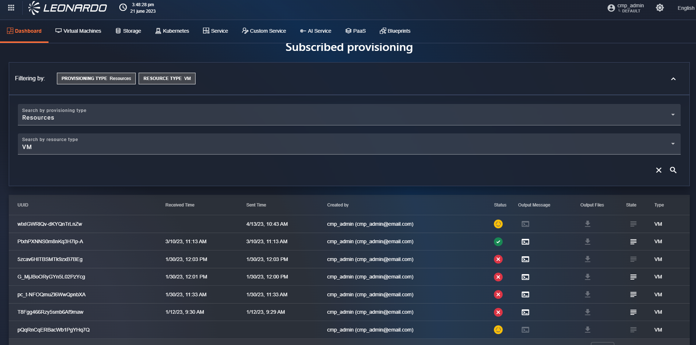
In questa vista è possibile eseguire le seguenti operazioni:
- Cliccando sulla riga di un provisioning fallito è possibile modificarlo e rieseguirlo
- Cliccando sull’icona “Output Message” corrispondente a un provisioning è possibile visualizzare la risposta ricevuta dal modulo “Terraform”
- Cliccando sul pulsante “Download” è possibile scaricare i file restituiti dalla funzionalità
- Cliccando sul pulsante “State” è possibile visualizzare il grafo e la lista delle risorse provisionate

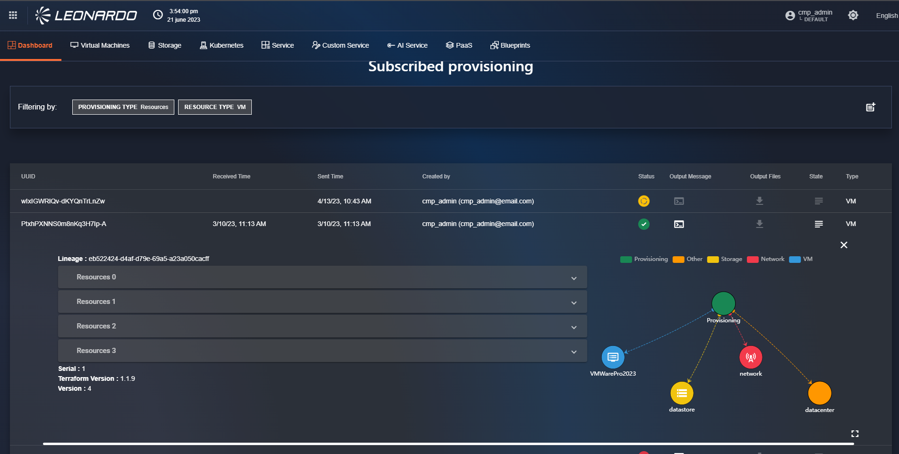
Disinstallazione automatica dei servizi HELM
Quando si seleziona “Servizi custom” come tipologia di filtro, è visibile un nuovo pulsante “Disinstalla” rappresentato da un’icona “Stop”.
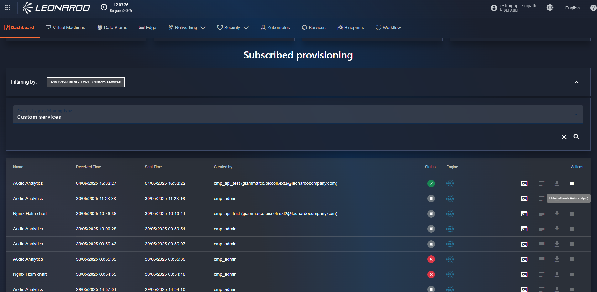
Cliccando il pulsante viene richiesta conferma della cancellazione. Alla conferma, SCMP eliminerà tutte le risorse HELM deployate nel namespace indicato.
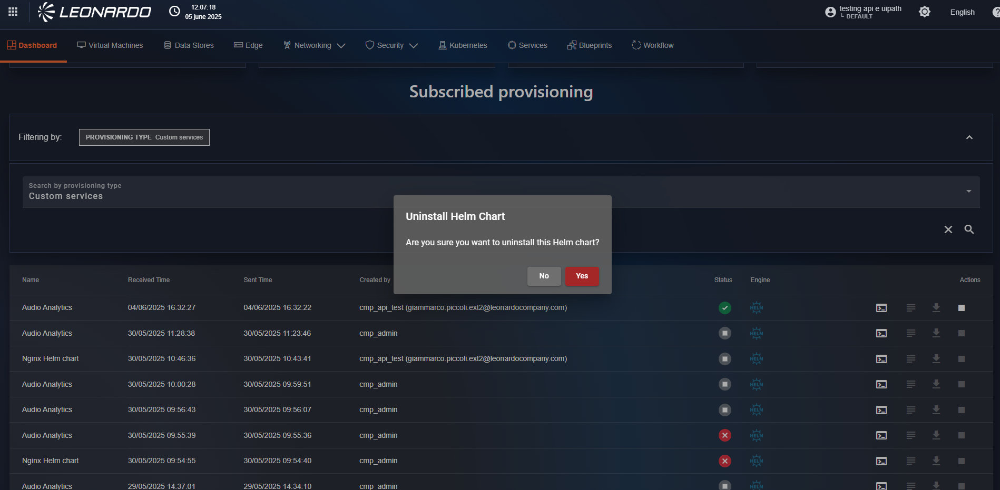
Blueprint
La lista presenta i seguenti attributi quando come filtro è selezionato “Blueprint”:
- Nome Blueprint
- Data creazione
- Utente che ha effettuato il provisioning
Sopra la tabella sono presenti due tab. Cliccandole, la tabella viene filtrata rispettivamente per Blueprint da completare e Blueprint completati (in rosso in figura).

In questa vista è possibile cliccare su una riga della tabella per visualizzare il dettaglio del blueprint.
Se il blueprint selezionato è “da completare”, si viene reindirizzati alla pagina di provisioning del blueprint dove è possibile eseguire le operazioni necessarie al completamento.

Se invece viene selezionato un blueprint completato, si viene reindirizzati alla pagina di dettaglio del blueprint dove il flusso “prediction” non viene più visualizzato perché già completato.

Creazione di un provisioning
Provisioning di “Risorse fisiche”
Utilizzando le tab della funzionalità provisioning, è possibile visualizzare le liste delle risorse provisionabili all’interno di SCMP, come Virtual Machine, Storage e Kubernetes.
Per visualizzare gli elementi nelle liste dei risultati, è necessario che esista una relazione nel catalogo SCMP con la risorsa catalogo del provider da provisionare.
Le funzionalità disponibili per questi elementi sono identiche; cambiano solo i parametri da inserire nei vari step di creazione.
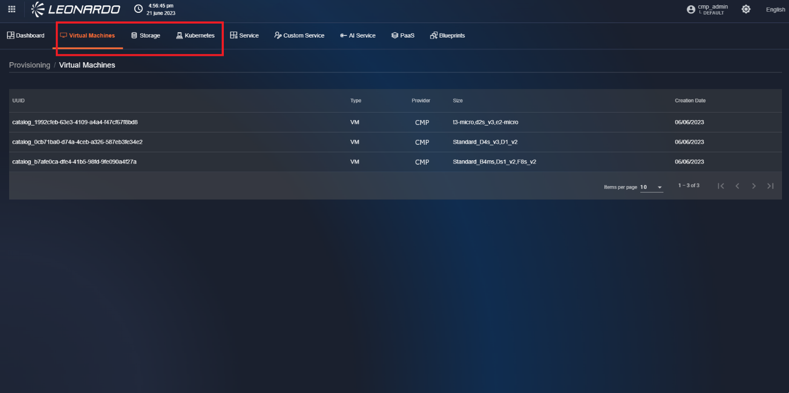
Virtual Machine
Per avviare il provisioning di una risorsa, cliccare sulla riga corrispondente per visualizzare la pagina contenente lo step 1 della creazione. In questo step è necessario selezionare, tramite il menu a tendina a sinistra, il “sottosistema target” dove verranno provisionate le risorse. Una volta selezionato, a destra viene visualizzato uno specchio informativo con le caratteristiche della risorsa che verrà provisionata. Per proseguire, cliccare il pulsante “Next” in basso a destra per passare allo step 2 “Config”.
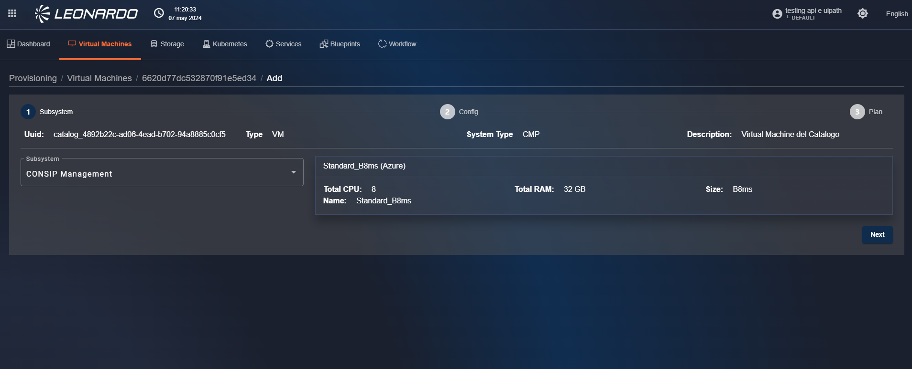
Nella pagina “Config” dello step 2, compilare tutti i campi obbligatori in tutte le sezioni del form. In basso a sinistra cliccare il pulsante “Reset” per azzerare tutti i campi della pagina.
Invece, a destra, cliccare il pulsante “Submit” per passare allo step 3 “Plan”.
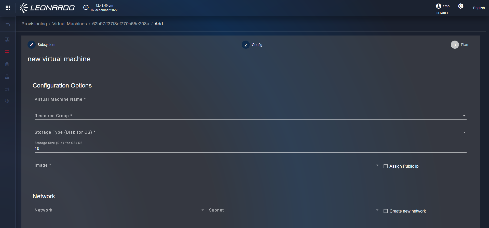
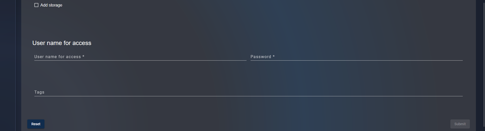
Dopo aver cliccato “Submit”, l’utente viene reindirizzato alla pagina “Plan” dello step 3 dove è possibile visualizzare il piano di provisioning inviato da Terraform, che indica tutti i parametri delle risorse che verranno configurate, e in basso è presente una lista con la prospettiva dei costi.
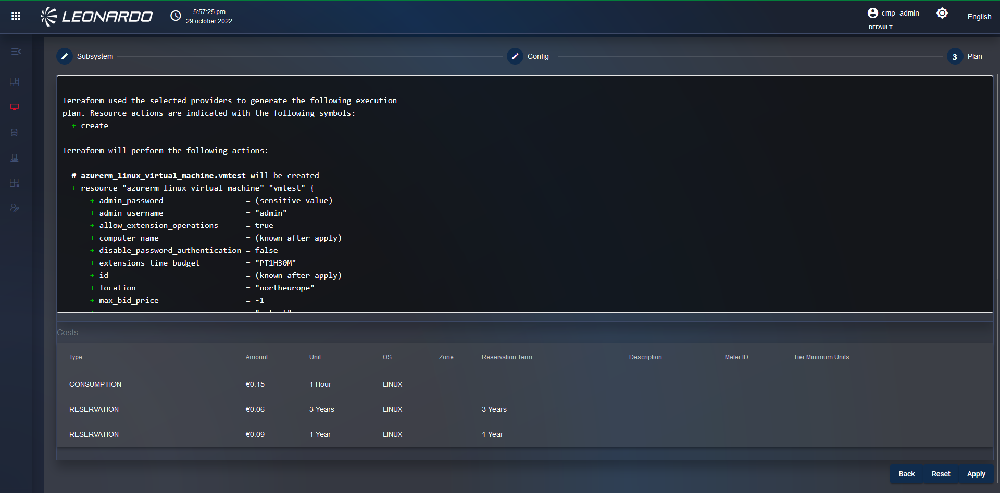
Sempre dalla pagina “Plan” dello step 3, in basso a destra, sono presenti tre pulsanti: “Back”, “Reset” e “Apply”. Se si clicca “Back”, l’utente torna alla pagina “Config” dello step 2 dove può modificare i parametri.
Se si clicca “Reset”, l’utente viene reindirizzato alla pagina “Subscription” dello step 1 dove è necessario selezionare un sottosistema e poi inserire i parametri nella pagina “Config” dello step 2.
Infine, cliccando “Apply”, la previsione viene salvata e l’utente viene reindirizzato alla tab “Dashboard” dove verifica la presenza della nuova previsione creata.

Provisioning di “Servizi”
Per accedere alla pagina dei servizi, cliccare sulla tab che raffigura una mensola nel menu in alto. Dopo averlo fatto, ci si trova nella pagina “Servizi”.

Nella pagina viene visualizzata una lista di componenti chiamati “Card”. Ogni card si riferisce a una specifica tipologia di servizio; in particolare, vengono visualizzate le seguenti informazioni:
- Nome servizio
- Icona servizio
- Tipologia di script utilizzato per il provisioning
- Descrizione servizio
- Pulsante “Subscribe” per procedere alla creazione del servizio
A seconda della tipologia di servizio selezionata, cambiano gli step per il provisioning; questi saranno analizzati di seguito.
Servizi “Standard”
Cliccare il pulsante “Subscribe” corrispondente a un servizio “standard”. L’utente viene reindirizzato allo step 1 della pagina di creazione del servizio e vengono visualizzate tutte le versioni istanziabili del servizio da SCMP. In particolare, vengono mostrati vari blocchi, ognuno con una lista di configurazioni:
- Nome e versione del servizio che verrà istanziato
- Nome e versione del sistema operativo che verrà installato sulla macchina
- Provider di appartenenza su cui verrà effettuato il provisioning

Selezionare una versione software e premere il pulsante “Continue”; l’utente viene reindirizzato allo step 2 del provisioning del servizio.
Nello step 2 sarà necessario selezionare un sottosistema e compilare il form con i dettagli del sottosistema scelto.

Dopo aver compilato tutti i campi del form, cliccare “Submit”.
Verrà inviata una richiesta al servizio Terraform, che validerà la configurazione di attivazione del flusso indicato e restituirà il risultato.

Cliccare “Apply” per validare il flusso e attivare la sottoscrizione del servizio.
La pagina dashboard si aprirà con la lista di tutti i servizi sottoscritti e i relativi stati. In particolare, il nuovo servizio provisionato avrà stato “Running” in giallo e, successivamente, a seconda del risultato, lo stato verrà aggiornato anche a “Completed” in verde o “Error” in rosso.

Servizi “Custom”
Cliccare il pulsante “Subscribe” corrispondente a un servizio “custom”. L’utente viene reindirizzato allo step 1 della pagina di creazione del servizio dove è possibile selezionare, dal menu a tendina centrale, il sottosistema in cui effettuare il provisioning.

Selezionando il sottosistema, la pagina si aggiorna per passare allo step 2 del provisioning del servizio.
In questo step 2 sarà necessario compilare il form con i parametri di configurazione specifici del servizio selezionato.
Dopo aver compilato tutti i campi del form, cliccare “Launch”.
Verrà inviata una richiesta al servizio Terraform, che validerà la configurazione di attivazione del flusso indicato e restituirà il risultato.
Cliccare “Apply” per validare il flusso e avviare le operazioni di configurazione automatica.
La pagina dashboard si aprirà con la lista di tutti i servizi sottoscritti e i relativi stati.
In particolare, il nuovo servizio provisionato avrà stato “Running” in giallo e, successivamente, a seconda del risultato, lo stato verrà aggiornato anche a “Completed” in verde o “Error” in rosso.
Servizi “Azure Pipeline”
Cliccare il pulsante “Subscribe” corrispondente a un servizio “Azure Pipeline”. L’utente viene reindirizzato allo step 1 della pagina di creazione del servizio. Dal menu a tendina centrale selezionare il “Branch” della pipeline da eseguire.

Selezionando il branch, la pagina si aggiorna per passare allo step 2 della creazione del servizio.
In questo step 2 sarà necessario compilare il form con i parametri di configurazione recuperati direttamente dalla Pipeline che verrà eseguita.

Dopo aver compilato tutti i campi del form, cliccare “Launch” per inviare la richiesta di avvio pipeline. La pagina dashboard si aprirà con la lista di tutti i servizi sottoscritti e i relativi stati.
In particolare, il nuovo servizio provisionato avrà stato “Running” in giallo e, successivamente, a seconda del risultato, lo stato verrà aggiornato anche a “Completed” in verde o “Error” in rosso.
Servizi “PaaS” e “AI Services”
Cliccare il pulsante “Subscribe” corrispondente a un servizio “PaaS”. L’utente viene reindirizzato allo step 1 della pagina di creazione del servizio dove sarà necessario compilare il form con i parametri di configurazione specifici del servizio selezionato.

Dopo aver compilato tutti i campi del form, cliccare “Launch”.
La pagina dashboard si aprirà con la lista di tutti i servizi sottoscritti e i relativi stati.
In particolare, il nuovo servizio provisionato avrà stato “Running” in giallo e, successivamente, a seconda del risultato, lo stato verrà aggiornato anche a “Completed” in verde o “Error” in rosso.
Servizi “HELM”
Cliccare il pulsante “Subscribe” corrispondente a un servizio “HELM”. L’utente viene reindirizzato allo step 1 della pagina di creazione del servizio dove sarà necessario selezionare il cluster su cui effettuare il provisioning.
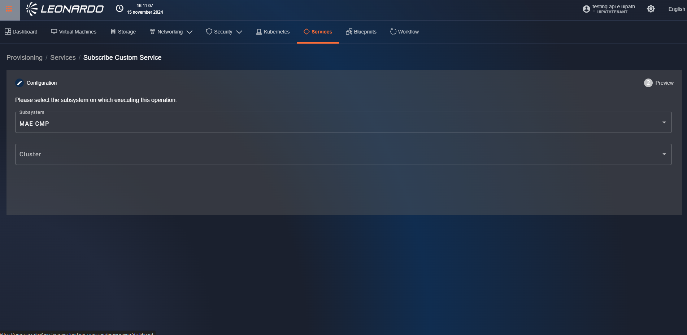
Compilare il form con i parametri di configurazione specifici del servizio selezionato. Aggiungere anche il file “values.yaml” in fondo, che contiene tutti i parametri di configurazione necessari al servizio.
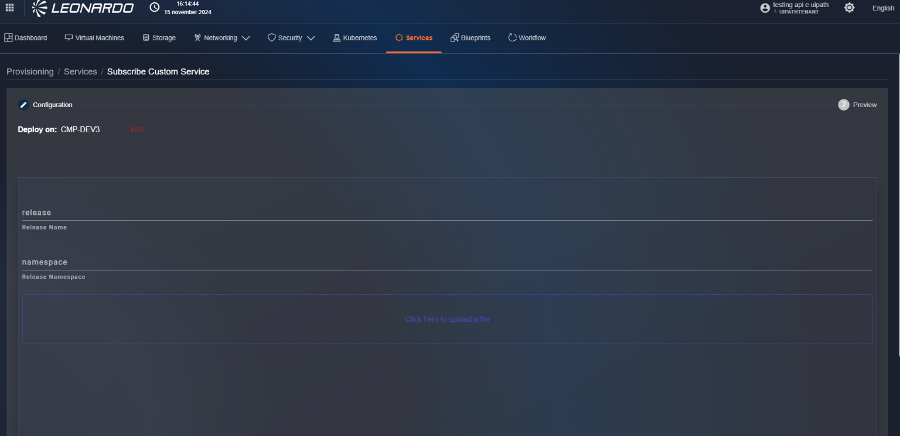
Dopo aver compilato tutti i campi del form, cliccare “Launch”.
La pagina dashboard si aprirà con la lista di tutti i servizi sottoscritti e i relativi stati.
In particolare, il nuovo servizio provisionato avrà stato “Running” in giallo e, successivamente, a seconda del risultato, lo stato verrà aggiornato anche a “Completed” in verde o “Error” in rosso.
Servizi HELM “Immutable”
Se durante la creazione del servizio HELM è stato selezionato il flag “immutable”, l’utente non ha la possibilità di visualizzare e modificare le informazioni del servizio, consentendo così un’installazione “one-Click”. Una volta selezionato “subscribe”, il sistema avvia automaticamente il provisioning e riporta l’utente alla pagina dashboard per monitorare i risultati.
Provisioning di immagini “Edge”
Per accedere alla pagina di provisioning “Edge”, cliccare sulla tab omonima nel menu in alto.
Dopo averlo fatto, si viene portati nella pagina “Edge” del modulo provisioning.

In un primo momento la pagina può sembrare vuota, ma selezionando un sottosistema EDGE configurato dal filtro “Subsystem”, verranno visualizzate tutte le immagini disponibili nel sottosistema.
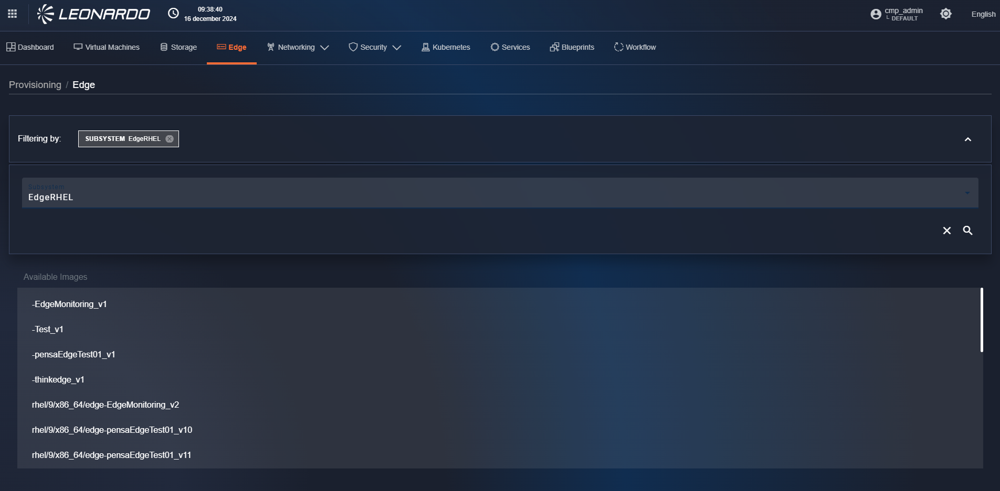
Selezionando una delle immagini disponibili, si aprirà a destra una sezione che consente di selezionare una macchina inventariata compatibile dall’elenco.
Dopo aver selezionato una macchina, è possibile confermare l’operazione tramite il pulsante “Apply”.
Si verrà riportati nella sezione “dashboard” del modulo “Provisioning” dove è possibile visualizzare l’esito delle operazioni.

Creazione richiesta provisioning “Blueprint”
Per accedere alla pagina dei servizi, cliccare sulla tab “blueprint” nel menu in alto. Dopo averlo fatto, ci si trova nella pagina “Blueprints”.
Nella pagina viene visualizzata una lista di componenti chiamati “Card”. Ogni card si riferisce a una specifica tipologia di servizio; in particolare, vengono visualizzate le seguenti informazioni:
- Nome servizio
- Icona servizio
- Tipologia di script utilizzato per il provisioning
- Descrizione servizio
- Pulsante “Subscribe” per procedere alla creazione del servizio
A seconda del blueprint selezionato, cambiano i parametri per il provisioning, mentre le funzionalità restano invariate.
Richiesta esecuzione “Blueprint”
Cliccare il pulsante “Subscribe” corrispondente a un “Blueprint”. L’utente viene reindirizzato allo step 1 della pagina di creazione. In questo step è necessario selezionare dal menu a tendina il sottosistema in cui effettuare il provisioning.

Selezionando un sottosistema, la pagina passa allo step 2 della creazione dove sarà necessario compilare il form con i parametri di configurazione specifici del blueprint selezionato.
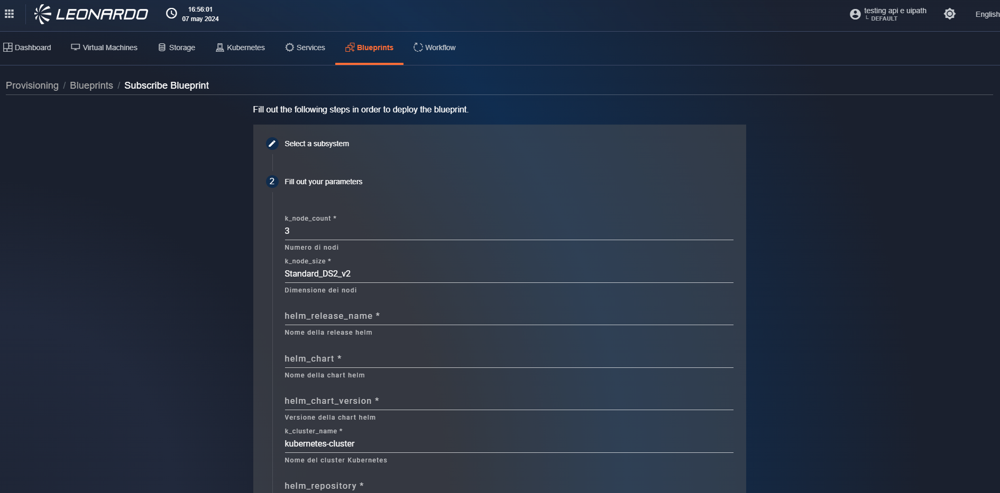
Una volta inseriti i parametri, è possibile cliccare il pulsante “Start” in basso a destra per avviare il provisioning. Dopo alcuni secondi si verrà reindirizzati alla pagina “Dashboard” filtrata per “Blueprint da completare”.
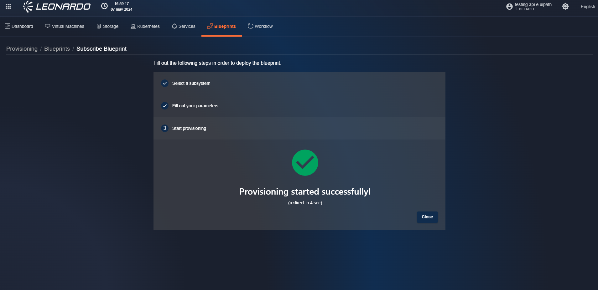
Pagina gestione blueprint “To be completed”
Per lavorare sul blueprint, è necessario selezionare un blueprint “da completare” dalla dashboard. Cliccando sulla riga corrispondente viene visualizzata la pagina di gestione.
Questa pagina è suddivisa in sezioni, nello specifico:
- “Process Diagram”: sezione che mostra un’immagine che rappresenta graficamente tutti gli step da eseguire nel blueprint. Inoltre, lo step attualmente in esecuzione è indicato in rosso.
- “Variables”: sezione in cui è possibile visualizzare tutti i parametri inseriti manualmente o automaticamente durante l’esecuzione del blueprint.
- “Task”: sezione in cui è possibile gestire gli step del blueprint che richiedono intervento manuale tramite i controlli disponibili.
- “Subprocess”: sezione in cui è possibile visualizzare lo stato di tutte le operazioni automatiche eseguite durante l’esecuzione del blueprint.

L’esecuzione, e quindi il passaggio, tra gli step del Blueprint può avvenire in due modi: automatico o manuale, esattamente come descritto all’interno del Blueprint stesso.
Step automatici
Il sistema gestisce automaticamente la creazione, configurazione delle risorse e il deploy delle applicazioni. Lo stato e il risultato di questi step sono visibili nella sezione “Subprocess” sottostante.
Per ogni riga della tabella, cliccando sui pulsanti a destra, è possibile verificare il messaggio di output generato e scaricarne il contenuto.
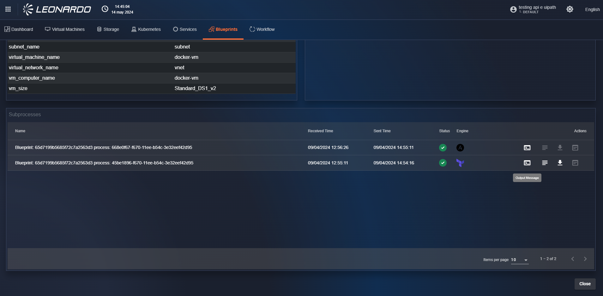
Step manuali
I task manuali, quando presenti e richiesti nel blueprint, compariranno nella sezione dedicata. Per lavorarci, è necessario prima cliccare sul pulsante “Assign” (rosso in figura) per prendere in carico il task.
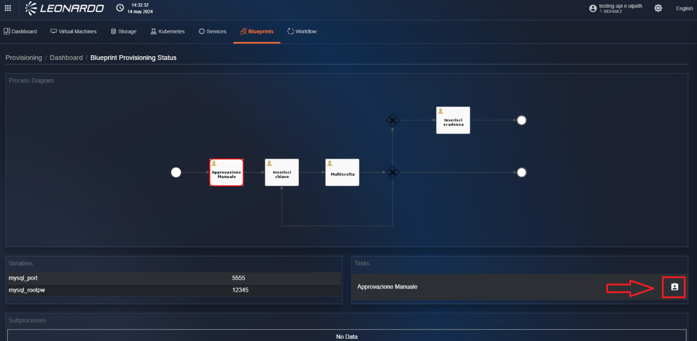
Verrà visualizzata una modale di conferma per l’assegnazione. Cliccando “Yes”, il task verrà preso in carico dall’utente e non potrà essere lavorato da un altro utente.

Apparirà un messaggio di conferma in basso e si noterà che la sezione “Task” è stata aggiornata. A sinistra, sotto il nome del task, è indicato l’assegnatario, a destra sono presenti 2 pulsanti:
- “Remove assignment” (rosso in figura)
- “Complete manual task” (giallo in figura)

Cliccando “Remove assignment” si apre una modale di conferma. Cliccando “Yes” il task torna disponibile per altri utenti che potranno prenderlo in carico.
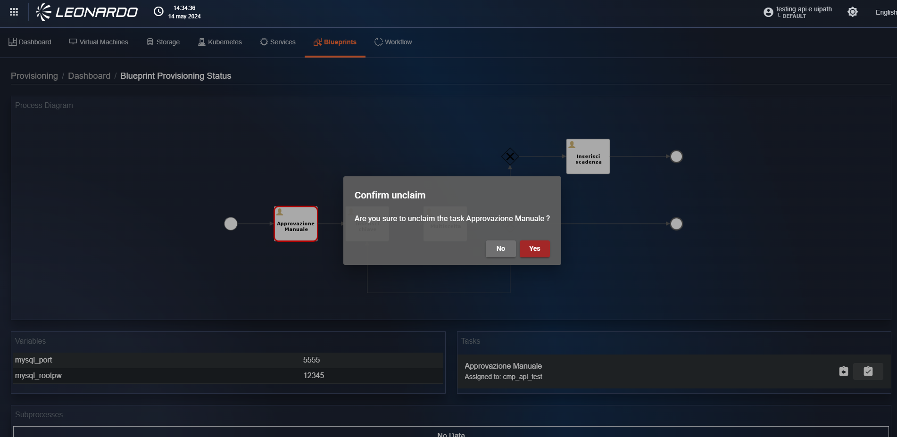
Cliccando il pulsante “Complete task” si apre una modale contenente uno o più campi personalizzabili. I campi possono essere di tipologia diversa.
Possiamo inserire campi numerici, booleani e di testo. Una volta inseriti, è possibile confermare cliccando il pulsante “Continue” in basso a destra.


Una volta premuto, si nota che il grafo BPMN nella pagina è stato aggiornato e che il prossimo step del blueprint è attivo e ha il bordo rosso.

Tutti i task manuali presenti nel blueprint seguiranno la procedura descritta; quindi, indipendentemente dal tipo di dato da inserire, è sempre necessario assegnarsi il task.
È possibile inserire un campo temporale negli step manuali dei blueprint, utilizzando un calendario sarà possibile selezionare manualmente il giorno e l’ora corretti.

L’ultimo tipo di step che possiamo trovare nei blueprint è il campo “Multi-choice”. Questo campo consente di gestire il flusso del blueprint.
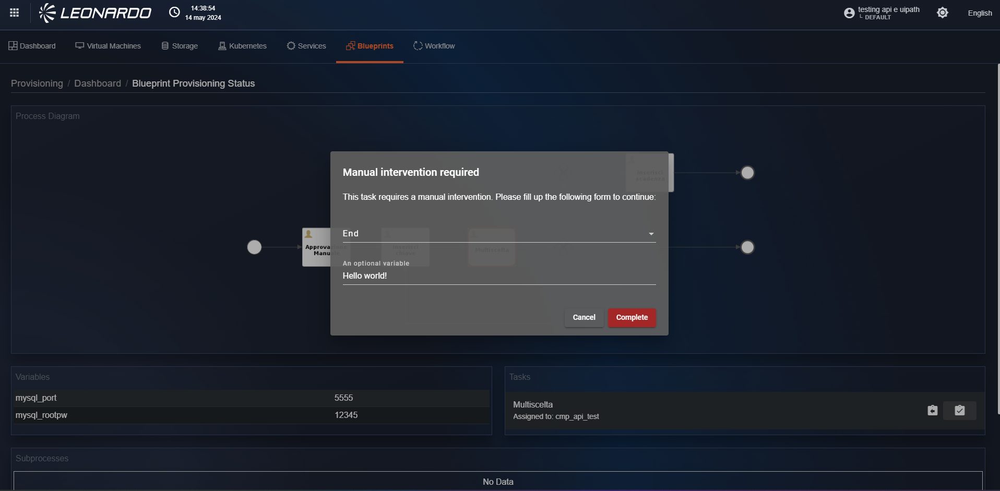
Questo campo è di tipo “Selezione”, quindi non sarà possibile inserire un valore personalizzato, ma verranno proposte opzioni selezionabili. In particolare, possiamo trovare tre scelte:
- “Repeat”: consente di rieseguire gli step precedenti come descritto nel blueprint (percorso rosa in figura)
- “End”: consente di concludere l’esecuzione del blueprint senza ulteriori operazioni (percorso giallo in figura)
- “Insert date”: consente di passare a uno step successivo del blueprint (percorso verde in figura)
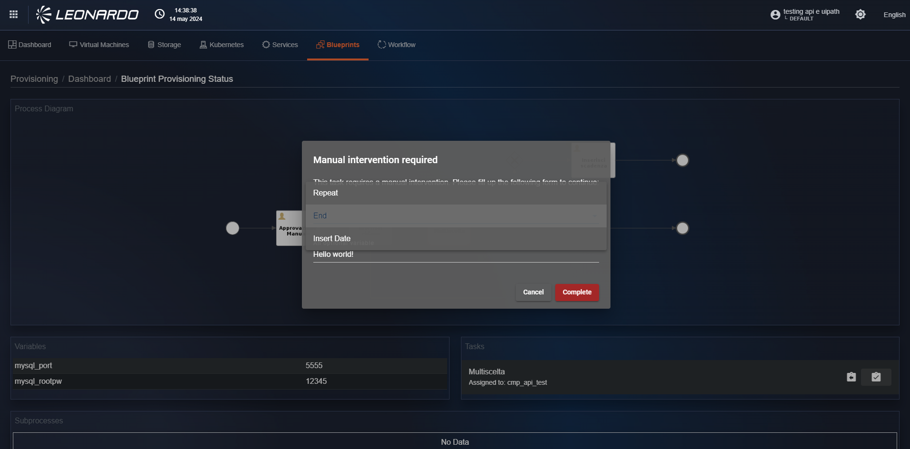

Una volta completati tutti gli step del blueprint, il grafo viene automaticamente rimosso dalla pagina e nella sezione step non sarà più possibile prendere in carico un’operazione. Inoltre, nella sezione “sub-processes” sarà possibile visualizzare il risultato di tutti gli step automatici del blueprint.

Modifica di un provisioning effettuato
Per un provisioning che è stato effettuato e risulta fallito, è possibile modificarlo.
La modifica del provisioning è disponibile solo per le tipologie “risorse”.
Per avviare la modifica di un provisioning, cliccare su una previsione fallita.
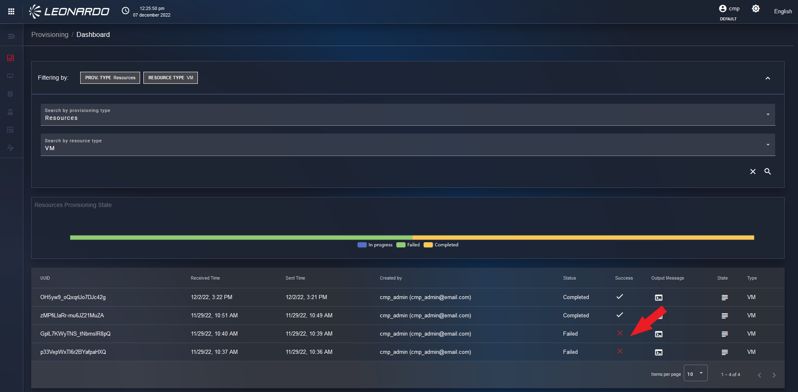
Dopo averlo fatto, ci si trova nella pagina “Config” dello step 2 dove è possibile modificare i parametri inseriti precedentemente.
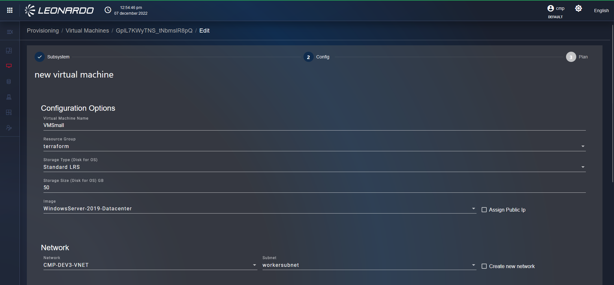

Dopo aver modificato i parametri necessari, in basso a destra cliccare il pulsante “Submit”.
Così facendo, si viene portati alla pagina “Plan” dello step 3, dove è presente la previsione e sotto la tabella dei costi.
In basso a destra cliccare il pulsante “Apply”. Dopo aver cliccato “Apply”, si viene portati alla tab “Dashboard”.
Successivamente, dalla pagina “Dashboard”, l’utente nota che la modifica è andata a buon fine.
È possibile modificare anche un provisioning fallito per altri elementi gestiti da SCMP.
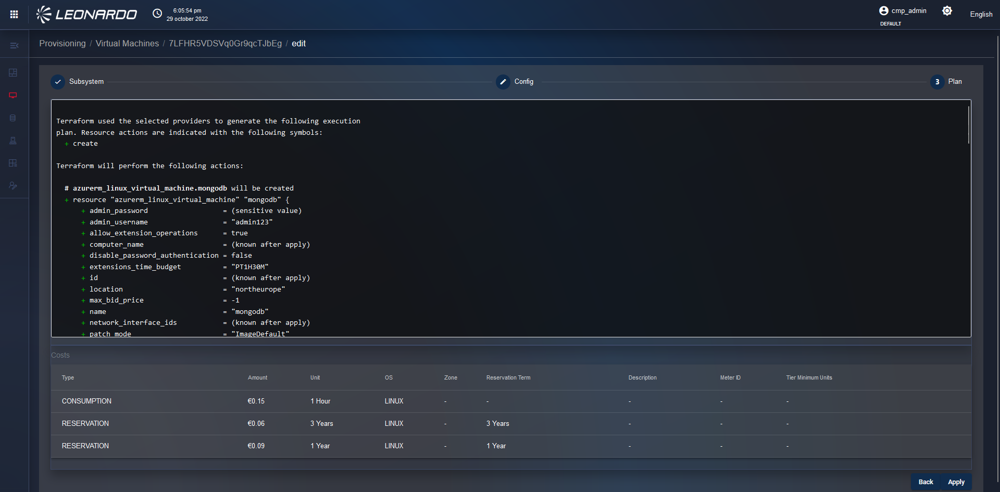